前言
仅以此篇文章梳理我编写该实例的过程
概述
我手中的正点原子STM32MINI板所用的主控型号为STM32F103C8T6，因此高级定时器只有TIM1和TIM8，本章我所使用的资源为TIM1的CH1，CH1N，BKIN，通过这些资源实现PWM的互补输出以及刹车功能
GPIO的配置
在使用TIM1的CH1，CH1N和BKIN前，让我们先来看下，这些引脚涉及到哪些GPIO以及GPIO需要怎样的配置？
翻开STM32中文参考手册，在GPIO章节-外设的GPIO设置中，我们可以看见以下描述：
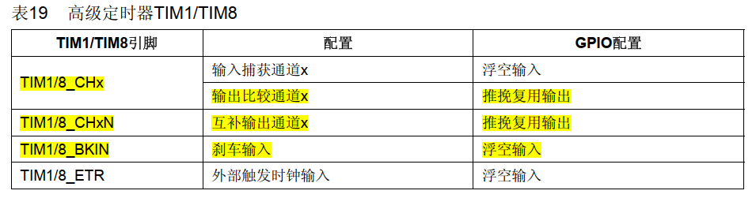
从表格中很清楚的看出，由于本次实例我们是需要做输出功能的，因此GPIO的配置为：
TIM1_CH1：推挽复用输出
TIM1_CH1N：推挽复用输出
TIM1_BKIN：浮空输入
在了解完GPIO的配置后，我们再看看TIM1_CH1，TIM1_CH1N，TIM1_BKIN在芯片中对应的是哪个GPIO？
翻开数据手册，可以找到如下描述
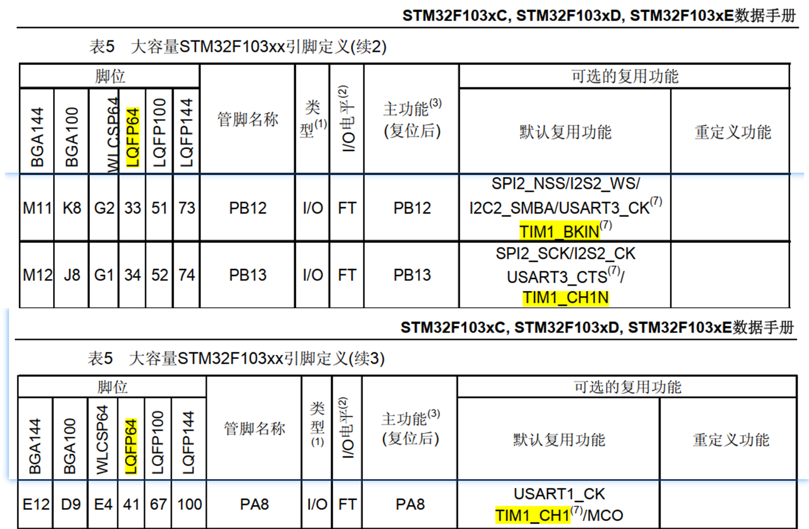
由于我的MINI板主控型号封装是LQFP64的，所以对于我的MINI板，相对应的引脚为：
TIM1_CH1：PA8
TIM1_CH1N：PB13
TIM1_BKIN：PB12
当然，TIM1_CH1也不是仅仅是对应PA8的，具体可以查数据手册-引脚对应
OK，经过以上我们大致了解到TIM1_CH1、TIM1_CH1N、TIM1_BKIN对应的GPIO以及GPIO的配置
相信大家都有一个疑问，我当时也有这个疑问，那就是在数据手册中，以上功能都是复用的，那到底要不要使能AFIO的时钟？
对于这个问题，我查看了参考手册-GPIO-AFIO章节，找到了如下描述：
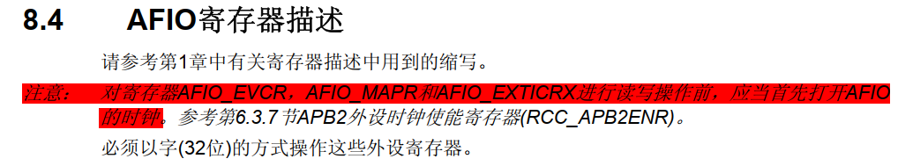
描述中提到，对AFIO_EVCR，AFIO_MAPR，AFIO_EXTICRX读写前要先打开AFIO时钟，那在本次实例中，我们究竟需不需要对这3个寄存器进行读写操作呢？
由于AFIO_EVCR是事件控制寄存器，AFIO_EXTICRX是外部中断控制寄存器，这两个在本次实例中我们都用不到，因此我们重点来看AFIO_MAPR复用重映射和调试IO寄存器，描述如下：
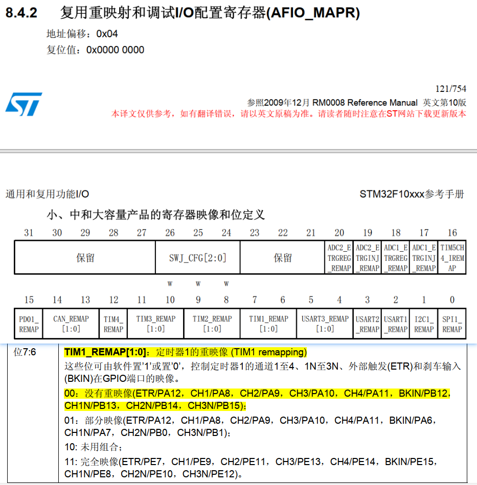
注意到，AFIO_MAPR复位值为0x0000 0000，而bit[7:6]在00时，PA8对应CH1，PB12对应BKIN，PB13对应CH1N，因此，我们本次实例并不需要对AFIO的寄存器进行读写操作，只使用寄存器默认的配置即可满足我们本次的需求，所以我们不需要打开AFIO的时钟
到这里，我们已经解决了GPIO、GPIO配置以及是否需要打开AFIO时钟的问题，那接下来还需要确定什么呢？
我们都知道要使用一个外设功能，都需要把对应的时钟打开，因此，打开参考手册-系统架构
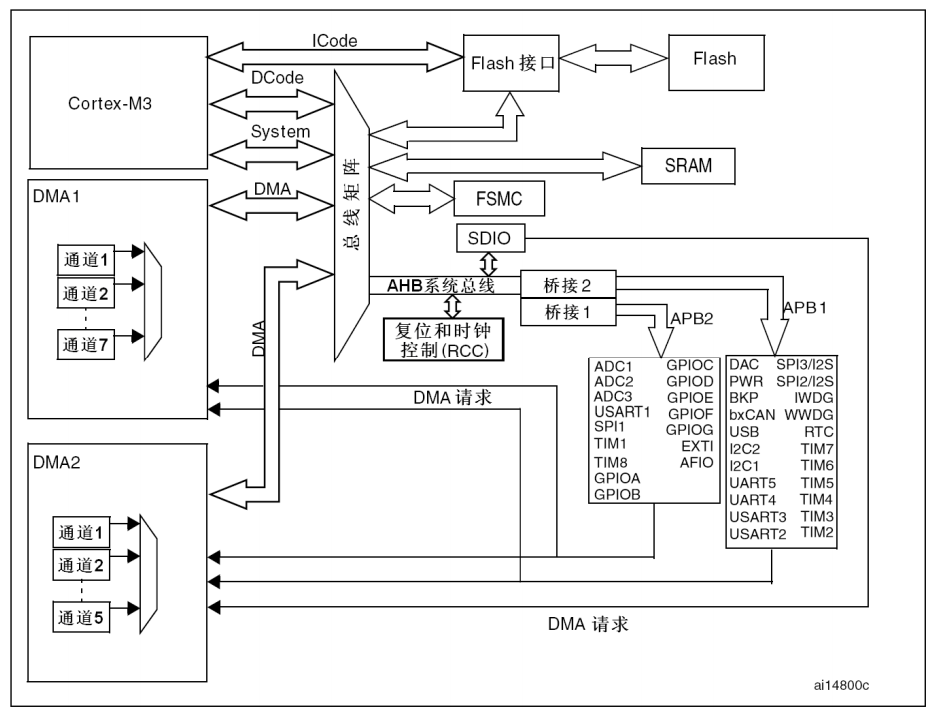
从上图的架构图来看，TIM1_CH1、TIM1_CH1N和TIM1_BKIN分别复用的PA8、PB13和PB12挂在了APB2总线上，当然TIM1自己也挂在APB2总线上
OK，到这里，我们需要确认的东西都确认完了，那就可以编写代码了，所有GPIO配置代码如下：
static void GPIOConfig(void)
{
GPIO_InitTypeDef GPIOInitStruct;
RCC_APB2PeriphClockCmd(RCC_APB2Periph_GPIOA | RCC_APB2Periph_GPIOB, ENABLE); /*使能GPIOA，GPIOB时钟*/
GPIOInitStruct.GPIO_Mode = GPIO_Mode_AF_PP;
GPIOInitStruct.GPIO_Speed = GPIO_Speed_50MHz;
GPIOInitStruct.GPIO_Pin = GPIO_Pin_8; /*PA8:CH1*/
GPIO_Init(GPIOA, &GPIOInitStruct);
GPIOInitStruct.GPIO_Pin = GPIO_Pin_13; /*PB13:CH1N*/
GPIO_Init(GPIOB, &GPIOInitStruct);
GPIOInitStruct.GPIO_Mode = GPIO_Mode_IN_FLOATING;
GPIOInitStruct.GPIO_Pin = GPIO_Pin_12; /*PB12:BKIN*/
GPIO_Init(GPIOB, &GPIOInitStruct);
GPIO_SetBits(GPIOB, GPIO_Pin_12); /*设置PB12*/
}

- 1
- 2
- 3
- 4
- 5
- 6
- 7
- 8
- 9
- 10
- 11
- 12
- 13
- 14
- 15
- 16
- 17
- 18
- 19
- 20
- 21
PWM互补输出与刹车功能
为方便后面的记录，我先说清TIM_TimeBaseInitTypeDef、TIM_OCInitTypeDef、TIM_BDTRInitTypeDef这3个结构体都是什么
TIM_TimeBaseInitTypeDef
这个结构体叫时基结构体，就是一个定时器最基本的结构体，高级/通用/基本定时器都有时基结构体，主要用来配置信号周期、计数器频率，计数模式之类的，在库函数中描述如下：
typedef struct
{
uint16_t TIM_Prescaler;
uint16_t TIM_CounterMode;
uint16_t TIM_Period;
uint16_t TIM_ClockDivision;
uint8_t TIM_RepetitionCounter;
} TIM_TimeBaseInitTypeDef;
- 1
- 2
- 3
- 4
- 5
- 6
- 7
- 8
TIM_Prescaler：定时器分频系数，用于调整计数器每次计数的时间，计数频率为：fck_psc / (TIM_Prescaler + 1)
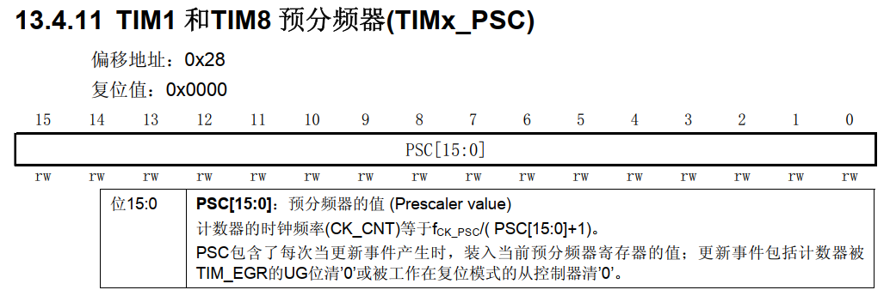
通过以上描述，我们知道，要想得到计数器的计数频率CK_CNT，我们需要知道fck_psc的数值，那么这个fck_psc是怎么来的呢？
翻看参考手册-定时器，我们可以找到如下框图：
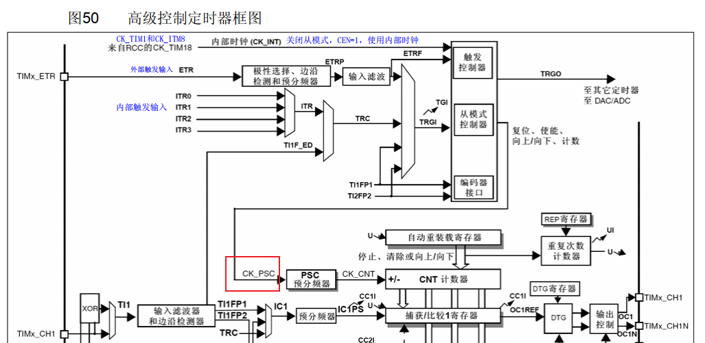
从上面的定时器框图我们可以看到CK_PSC，来自内部时钟CK_INT，而CK_INT又来自RCC的CK_TIM1和CK_TIM8，那问题来了，这个CK_TIM1和CK_TIM8又是从哪来的？
继续查看参考手册，在参考手册-时钟，我们找到了以下的时钟框图（只截取了部分）：
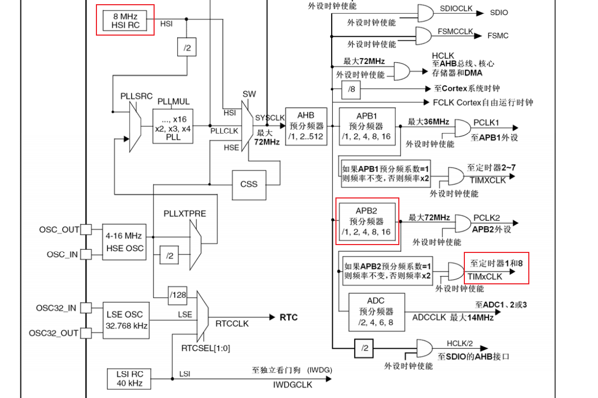
从时钟框图来看，TIMxCLK来自APB2，而APB2来自AHB，而AHB又来自SYSCLK，到这里我们惊奇的发现，若使用内部时钟，fck_psc的数值只有SYSCLK，AHB的分频系数，APB2的分频系数有关，而在一般情况下，AHB分频系数为1，而APB2的分频系数也为1，因此fck_psc的数值实际上为SYSCLK
TIM_CounterMode：计数模式，有向上、向下、中央对齐1、中央对齐2、中央对齐3这5种模式，在底层是对TIMx_CR1寄存器的bit[6:4]操作
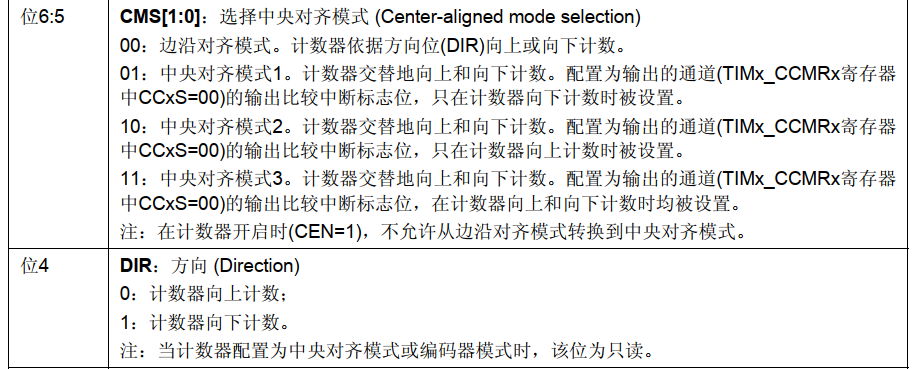TIM_Period：信号周期，从0开始累加，底层是对TIMx_ARR寄存器操作
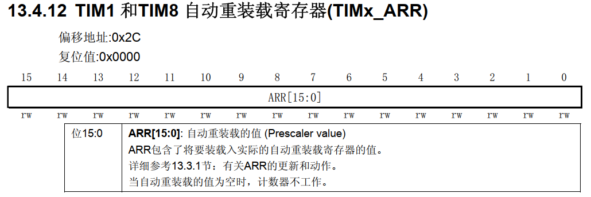
相信有人和我一样疑惑，这个信号周期是什么？
我们知道，定时就是设定一段时间，那设定的这一段时间就是信号周期/单次计数时间，很简单，因为定时器定时是按计数器来计时的，例子如下：
假如我们需要定时100ms，系统时钟 72M，那我们应该怎么做呢?
首先：TIM_Prescaler = 7200 - 1
此时计数器单次计数频率为：72M / 7200 = 10KHz
此时计数器单次计数时间为：1/10K * 1000 = 100us
其次：TIM_Period = 1000 - 1
此时设定的时间为：计数器单次计数时间 * 1000 = 100us * 1000 = 100ms
因此信号周期的频率为：1 / 100 ms = 10 Hz
TIM_ClockDivision：原文描述是：定时器时钟CK_INT频率与死区发生器以及数字滤波器采样时钟频率分频化，但实际应该是计数器时钟CK_CNT频率才对，这个只有在配置死区和数字滤波时才用得到，底层是对TIMx_CR1寄存器的bit[9:8]操作，不需要时默认为0x0000就可以了
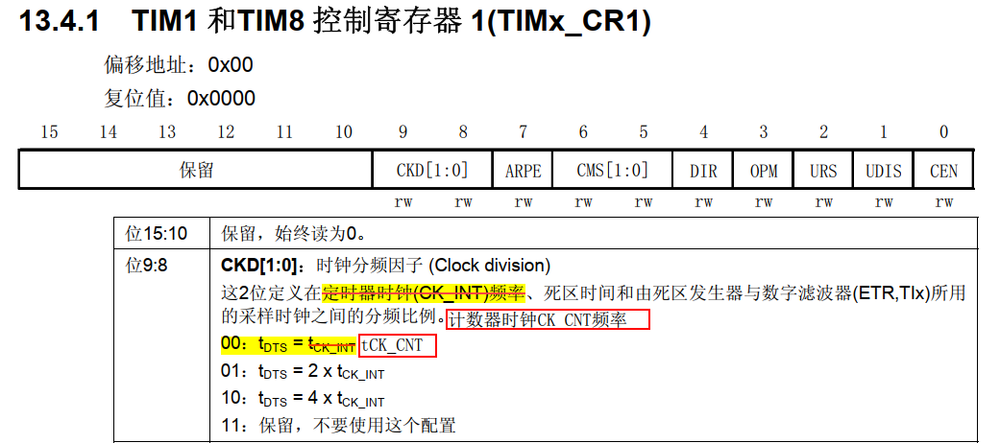
TIM_RepetitionCounter：重复计数器，只有高级和通用定时器才有这个功能，底层是对TIMx_RCR寄存器操作，若开启重复计数器，只有重复计数器递减到0，才会更新事件，这种机制意味着，若开启重复计数器，定时周期应该等于重复计数器的数值乘上信号周期
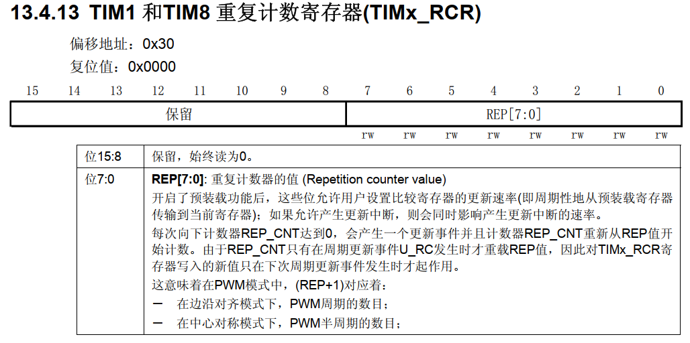
以上，就是时基结构体的简单描述啦，更详细的可查参考手册
TIM_OCInitTypeDef
这个结构体叫做输出比较结构体，在库函数中描述如下：
typedef struct
{
uint16_t TIM_OCMode;
uint16_t TIM_OutputState;
uint16_t TIM_OutputNState;
uint16_t TIM_Pulse;
uint16_t TIM_OCPolarity;
uint16_t TIM_OCNPolarity;
uint16_t TIM_OCIdleState;
uint16_t TIM_OCNIdleState;
} TIM_OCInitTypeDef;
- 1
- 2
- 3
- 4
- 5
- 6
- 7
- 8
- 9
- 10
- 11
TIM_OCMode：比较输出模式，以CH1为例，在底层是对TIMx_CCMR1寄存器的bit[6:4]，共有8种模式，我一般是使用PWM1，具体的模式描述可以看下图或者参考手册
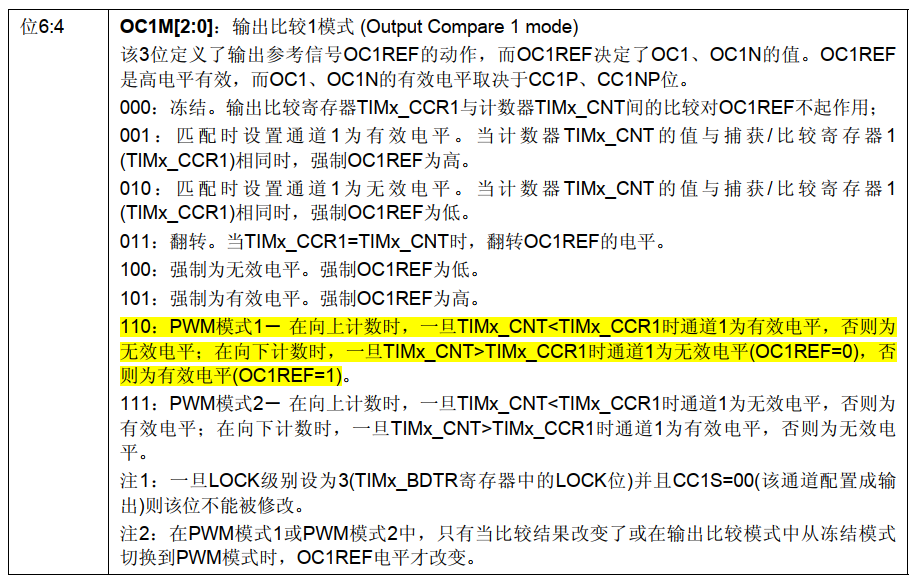
TIM_OutputState和TIM_OutputNState，这两个没什么好说的，就是使能输出，以CH1为例，在底层是对TIMx_CCER寄存器的bit2和bit0操作
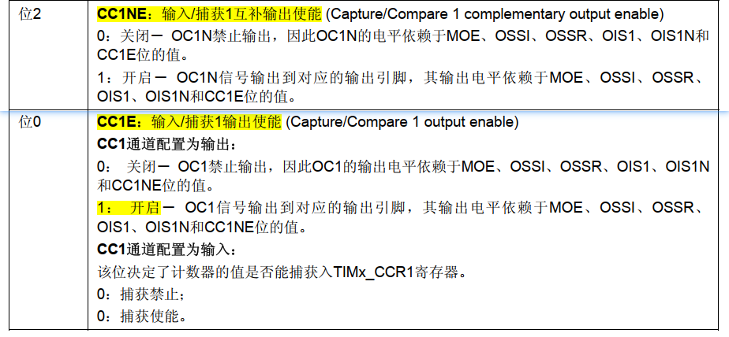
TIM_Pulse：占空比，在底层是对TIMx_CCR1寄存器进行操作，原理是把TIMx_CNT的值与TIM_Pulse的值比较并输出信号，具体输出逻辑取决于TIM_OCMode选择的模式
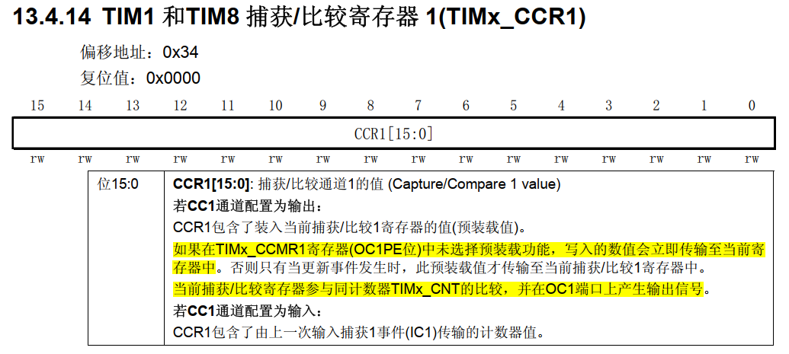
TIM_OCPolarity和TIM_OCNPolarity：选择输出和互补输出有效电平的极性，在底层是对TIMx_CCER寄存器操作。这两个如果设置为1，那有效电平就为高电平；如果设置为0，那有效电平为低电平
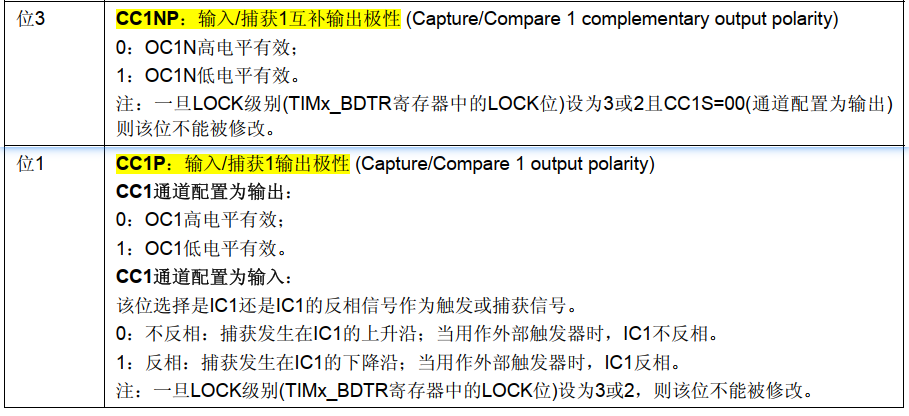
TIM_OCIdleState和TIM_OCIdleState：空闲时的电平状态，底层是对TIMx_CR2寄存器操作
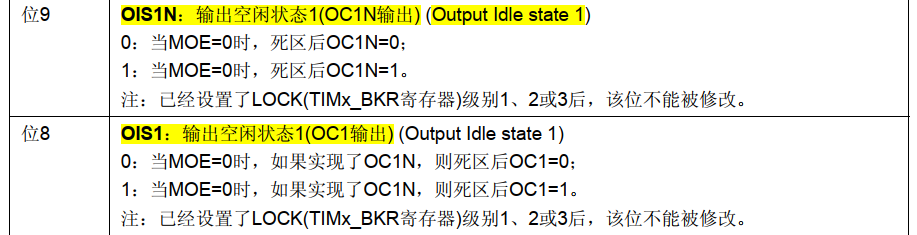
我们注意到参考手册中有提示：在同一时刻，输出和互补输出不能同时处于有效电平上，因此在设置空闲时，TIM_OCIdleState和TIM_OCIdleState不能设置成两个都是有效电平
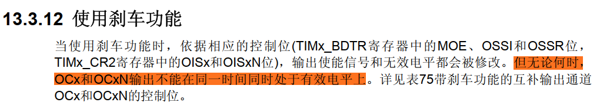
以上，就是TIM_OCInitTypeDef结构体的描述了，有兴趣深入了解的可以查参考手册
TIM_BDTRInitTypeDef
这个结构体主要是配置刹车和死区，我们也叫刹车死区寄存器，只在TIM1和TIM8中用到，该结构体主要是对TIMx_BDTR寄存器操作，在库函数中的描述如下：
typedef struct
{
uint16_t TIM_OSSRState;
uint16_t TIM_OSSIState;
uint16_t TIM_LOCKLevel;
uint16_t TIM_DeadTime;
uint16_t TIM_Break;
uint16_t TIM_BreakPolarity;
uint16_t TIM_AutomaticOutput;
} TIM_BDTRInitTypeDef;
- 1
- 2
- 3
- 4
- 5
- 6
- 7
- 8
- 9
- 10
TIM_OSSRState和TIM_OSSIState：关闭状态选择，具体看以下描述
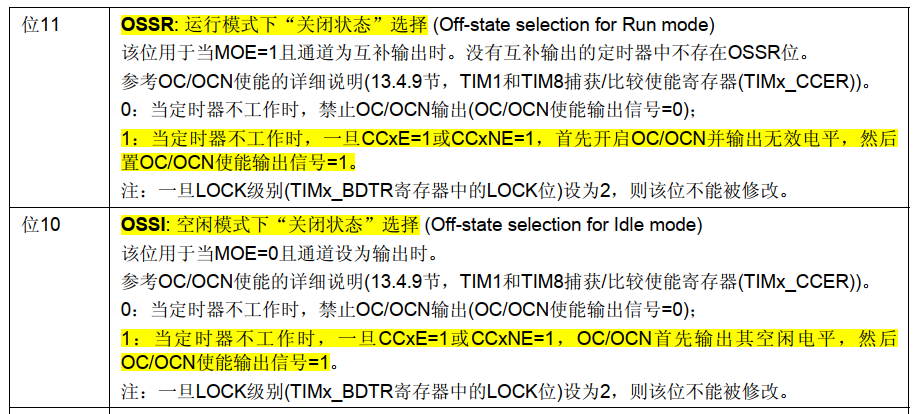
TIM_LOCKLevel：锁定等级，这个也没什么好说的，看以下描述
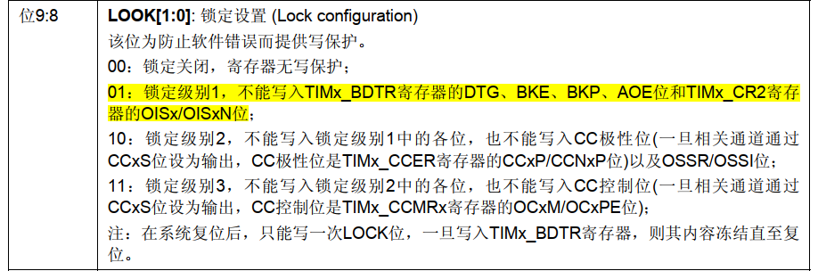
TIM_DeadTime：死区时间设置，这个计算很简单，高3位决定选用哪条公式，然后再按公式计算就可以了，但是**需要注意Tdts这个的取值取决于时基结构体的TIM_ClockDivision的取值，**详细看上面是时基结构体的相关描述
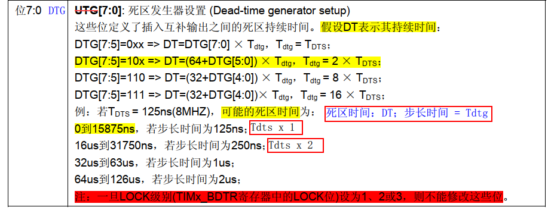
如果计数器频率为10KHz，TIM_ClockDivision = 1，TIM_DeadTime = 0x80，那死区时间是多少？
首先，1 / 10KHz = 100us，由于TIM_ClockDivision = 1，所以Tdts = Tck_cnt = 100us
其次，0x80高3位是100，因此选用第2条公式，所以死区时间 = 64 x 2 x 100 us = 12.8ms
TIM_Break：刹车功能使能，具体描述如下
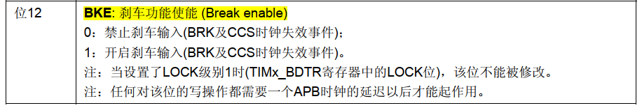
TIM_BreakPolarity：刹车极性，当为0时，低电平触发刹车（停止输出），当为1时，高电平触发刹车
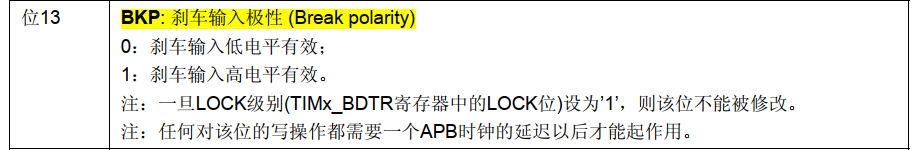
TIM_AutomaticOutput：自动输出使能，具体看下图，没什么好说的
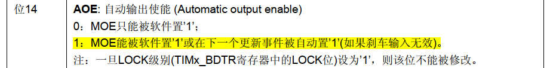
以上，就是刹车和死区寄存器的配置说明了，当然在配置完之后，还需要使能主输出后，才会有OC和OCN输出
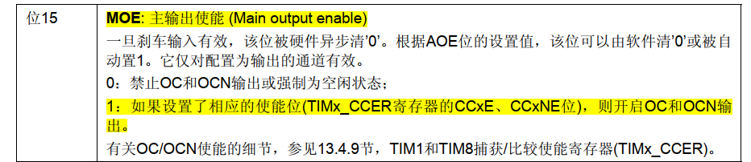
代码配置
在说了那么多后，我们大致都知道该怎么配置了，那么我就直接把代码贴出来吧
static void TIM1Config(void)
{
TIM_TimeBaseInitTypeDef TIMTimeBaseStruct;
TIM_OCInitTypeDef TIMOCInitStruct;
TIM_BDTRInitTypeDef TIMBDTRInitStruct;
RCC_APB2PeriphClockCmd(RCC_APB2Periph_TIM1, ENABLE); /*使能TIM1时钟*/
/*时基结构体配置*/
TIMTimeBaseStruct.TIM_Period = 1000 - 1; /*从0开始 一个信号周期计数1000次*/
/*定时器时钟：72MHz / 7200 = 10kHz；周期：(1 / 10kHz) * 1000 = 100us*/
TIMTimeBaseStruct.TIM_Prescaler = 7200 - 1; /*计数器频率10kHz，每计数一次花费 100us*/
/*一个信号周期花费时间：1000 * 100us = 100ms*/
TIMTimeBaseStruct.TIM_ClockDivision = TIM_CKD_DIV1; /*时钟分频因子 = 1，tDTS=tCKINT*/
TIMTimeBaseStruct.TIM_CounterMode = TIM_CounterMode_Up; /*向上计数*/
TIMTimeBaseStruct.TIM_RepetitionCounter = 0; /*禁用重复计数器*/
TIM_TimeBaseInit(TIM1, &TIMTimeBaseStruct);
/*输出比较结构体配置*/
TIMOCInitStruct.TIM_OCMode = TIM_OCMode_PWM1; /*PWM1模式*/
TIMOCInitStruct.TIM_OutputState = TIM_OutputState_Enable; /*输出使能*/
TIMOCInitStruct.TIM_OutputNState = TIM_OutputNState_Enable; /*互补输出使能*/
TIMOCInitStruct.TIM_OCPolarity = TIM_OCPolarity_High; /*输出有效电平为高电平*/
TIMOCInitStruct.TIM_OCNPolarity = TIM_OCNPolarity_High; /*互补输出有效电平为高电平*/
TIMOCInitStruct.TIM_OCIdleState = TIM_OCIdleState_Set; /*输出空闲时为高电平*/
TIMOCInitStruct.TIM_OCNIdleState = TIM_OCNIdleState_Reset; /*互补输出空闲时为低电平*/
/*初始化TIM1的通道1*/
TIMOCInitStruct.TIM_Pulse = 250 - 1; /*占空比 = 250 / 1000 = 25%*/
TIM_OC1Init(TIM1,&TIMOCInitStruct);
TIM_OC1PreloadConfig(TIM1, TIM_OCPreload_Enable); /*开启预装载，在更新时间后才会重新装载数值*/
/*刹车和死区结构体配置*/
TIMBDTRInitStruct.TIM_OSSRState = TIM_OSSRState_Enable; /*运行模式下“关闭模式”选择 = 1*/
TIMBDTRInitStruct.TIM_OSSIState = TIM_OSSIState_Enable; /*空闲模式下“关闭模式”选择 = 1*/
TIMBDTRInitStruct.TIM_LOCKLevel = TIM_LOCKLevel_1; /*锁定级别1，见参考手册*/
TIMBDTRInitStruct.TIM_DeadTime = 0x80; /*死区时间：12.8ms*/
TIMBDTRInitStruct.TIM_Break = TIM_Break_Enable; /*开启刹车功能*/
TIMBDTRInitStruct.TIM_BreakPolarity = TIM_BreakPolarity_Low; /*刹车输入低电平有效，如果引脚检测到高电平则会停止PWM的输出，不会产生任何波形*/
TIMBDTRInitStruct.TIM_AutomaticOutput = TIM_AutomaticOutput_Enable; /*开启自动输出*/
TIM_BDTRConfig(TIM1, &TIMBDTRInitStruct);
TIM_Cmd(TIM1, ENABLE); /*使能定时器，计数器开始计数*/
TIM_CtrlPWMOutputs(TIM1, ENABLE); /*开启主输出*/
}
- 1
- 2
- 3
- 4
- 5
- 6
- 7
- 8
- 9
- 10
- 11
- 12
- 13
- 14
- 15
- 16
- 17
- 18
- 19
- 20
- 21
- 22
- 23
- 24
- 25
- 26
- 27
- 28
- 29
- 30
- 31
- 32
- 33
- 34
- 35
- 36
- 37
- 38
- 39
- 40
- 41
- 42
- 43
- 44
- 45
- 46
PWM互补输出与刹车实例演习
void bspTIMInit(void)
{
GPIOConfig();
TIM1Config();
}
/************************************************************************
* 接线：
* PA8 CH1 | PB13 CH1N | PB12 BKIN
* 功能：
* 通过 PA8 和 PB13 输出互补的 PWM 波形；当 PB12 为高时，停止 PWM 输出
* 描述：
* PWM 周期 100ms；死区时间 12.8ms
*/
int main(void)
{
bspTIMInit();
while (1);
}
- 1
- 2
- 3
- 4
- 5
- 6
- 7
- 8
- 9
- 10
- 11
- 12
- 13
- 14
- 15
- 16
- 17
- 18
- 19
- 20
- 21
在运行以上代码后，我通过逻辑分析仪抓取的波形如下：
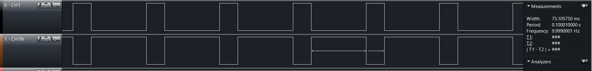
通过以上波形，可见确实是输出了 PWM互补波形，信号周期也是十分接近10Hz
到这里就有人会问，怎么没有死区时间呀，不用着急，我把波形放大给你们看看
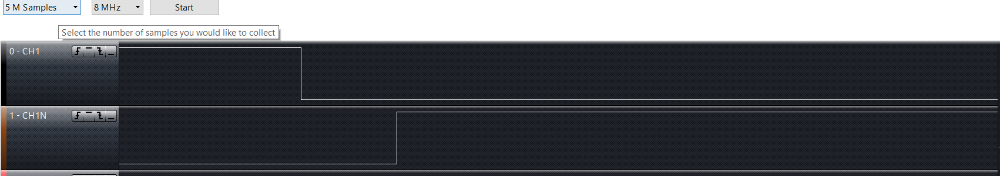
从上图看来，确实存在一段死区，但具体时间是多少？逻辑分析仪看不出来，有兴趣的小伙伴可以用示波器抓下，如果没什么问题的话，那应该就是12.8ms，至于我为什么不用示波器抓，那是因为我没有呀
好了，到这，PWM互补输出与刹车功能学习过程就记录完了，不知不觉，居然写了5个小时


 2106
2106


 被折叠的 0 条评论
为什么被折叠?
被折叠的 0 条评论
为什么被折叠?
 到【灌水乐园】发言
到【灌水乐园】发言